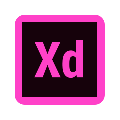
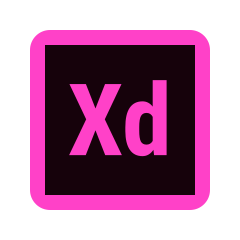

Achtergrond

Opleiding Commerciële Economie - Instituut voor Commercieel Management - Hogeschool Rotterdam
2011-2016
Floormanager bron- en contactonderzoek - GGD Rotterdam Rijmond
September 2020 – september 2021
Account Director - Dynata
april 2018 – oktober 2019
Recruitment Consultant - Computer Futures
augustus 2016 – maart 2018
Bekijk volledig CV


 
